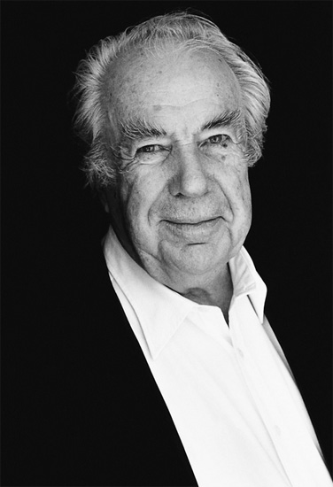

H&M (Эйч энд Эм, Hennes & Mauritz) — шведская компания, выпускающая одежду, обувь, аксессуары, нижнее белье, купальники, косметику, товары для дома в сегменте масс-маркет. Главные принципы бренда — высокое качество товаров, демократичные цены, соответствие последним модным тенденциям в режиме fast fashion. С 2014 по 2018 гг. — официальный поставщик униформы для Олимпийской сборной Швеции.
Компания имеет более 2200 магазинов в 40 странах мира. Крупнейшим акционером является семья Перссонов. Им принадлежит около 37 % акций. Компания не имеет собственных производственных площадей, размещая заказы на заводах Китая, Пакистана и Шри-Ланки. Также корпорация не имеет собственной недвижимости и берет все торговые площади в аренду.
Эрлинг Перссон (Erling Persson) В начале 40-х годов ХХ века Эрлинг Перссон, разносчик сыров по ресторанам Стокгольма, посетил Нью-Йорк. Во время поездки его удивило количество небольших розничных магазинчиков, предлагающих одежду по демократичным ценам. Эрлинг понял, что заработать деньги можно на sistemniy_marketingмассовости товара. Он открыл в шведском городе Вестерос (Västerås) небольшую фабрику, где продавал одежду прямо со склада по очень низкой стоимости. Уже в 1947 году появился магазин под названием Hennes (швед. «для неё»), предлагающий только женскую одежду. В то время в Швеции пустовала ниша недорогой качественной одежды, которую Перссон и заполнил. Это обеспечило его компании огромную популярность. К 1964 году была открыта уже целая сеть магазинов Hennes. В 1968 году одним из акционеров компании стал Мауриц Видфорс, который уже владел несколькими магазинами по продаже одежды для охоты Mauritz Widforss. С того момента название компании поменялось на Hennes & Mauritz, а ассортимент теперь включал одежду для женщин, мужчин и детей. В 70-х началось продвижение бренда в Европу. Первым стал небольшой бутик в Лондоне на Оксфорд-Серкус, открытый в 1976 году. Для привлечения клиентов Стефан Перссон, сын Эрлинга, придумал рекламный трюк: всем посетителям раздавались альбомы группы ABBA. Около здания выстроилась большая очередь. К началу 80-х магазины марки были открыты в Норвегии, Дании, Швейцарии и Германии.
Стефан Перссон (Stefan Persson) В 1982 году руководить компанией H&M стал сын Эрлинга — Стефан Перссон. Он добился еще большего снижения цен на продукцию марки и придумал концепцию «Мода и качество по лучшей цене».
Карл-Йохан Перссон (Karl-Johan Persson) В 1998 году Стефан Перссон покинул пост президента H&M, сохранив за собой место председателя совета директоров. Должность занял Фабиан Манссон, затем его сменил Рольф Эриксен. С июля 2009 года компанией управляет сын Стефана – Карл-Йохан Перссон. В 2007 году компания H&M основала бренд Cos. Он был создан с целью проникновения в более высокий ценовой сегмент рынка. В 2008 году корпорация H&M выкупила шведскую компанию Fabric Scandinavien, владеющую брендами одежды Cheap Monday, Weekday и Monki.
В 2000 году в Нью-Йорке открылся первый монобрендовый магазин H&M.
В 2008 году Маргарета Ван ден Бош объявила об уходе из H&M после 20 лет работы в компании. Ван ден Бош на посту креативного директора заменила Энн-Софи Йоханссон, возглавлявшая до того момента женскую линию бренда. Маргарета продолжила сотрудничать с H&M в качестве креативного консультанта.
В марте 2009 года первый магазин H&M открылся в Москве в ТЦ Метрополис. За год до этого события появилась русская версия сайта марки. На 2014 год открыто более 50 бутиков бренда по всей России.
В 2010 году H&M запустили онлайн-бутик.
Весной 2012 года H&M выпустили лимитированную коллекцию футболок Garden Collection из органически чистого хлопка и продуктов переработки остатков от производства. Выпуск был приурочен к проведению британской «Недели климата». Все средства, вырученные от продаж футболок, поступили на счет одного из фондов, занимающегося защитой окружающей среды. Для привлечения большого внимания общественности к проблемам экологии в рекламной кампании приняли участие знаменитости.
В мае 2012 года была выпущена капсульная благотворительная коллекция одежды, обуви и аксессуаров H&M for Water. Для женщин были созданы платья, юбки, топы, бюстье, шорты, пляжные комплекты. Наряды были украшены растительными и цветочными принтами. Для мужчин H&M предложили футболки, рубашки-поло и шорты с растительным орнаментом. Из обуви в обеих коллекциях присутствовали сандалии и сланцы. Шведский ритейлер также предложил для детей мини-версии нарядов, обуви и аксессуаров взрослых коллекций. Все вещи были выполнены из органического хлопка и прочих эко-материалов. 25% от продаж были перечислены проекту WaterAid, направленного на обеспечение питьевой водой и санитарными условиями населения бедных стран.
В 2012 году H&M сообщили о запуске нового бренда люксового сегмента & Other Stories. В 2013 году была запущена линия декоративной косметики H&M Cosmetics.
Весной 2013 года H&M подписали контракт с Олимпийским комитетом на 4 года. В течение этого периода компания будет создавать форму для Олимпийской сборной Швеции. H&M разработают одежду для торжественных церемоний открытия и закрытия игр. В коллекцию также войдут полные комплекты для всех членов шведской команды, которые они будут носить в Олимпийской деревне во время и после тренировок.